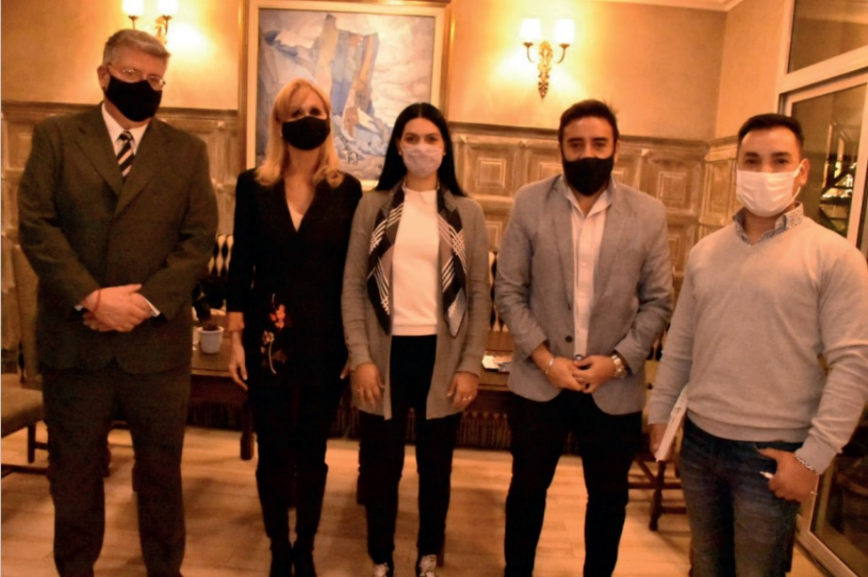

Reunión con el personal en el ex CAL. Reunión con la propietaria del local. Reunión con el Intendente de Tunuyan Martin Aveiro. Reunión con el Intendente de Maipú – Matías Stevanato. Reunión con la Directora de Discapacidad de Mendoza Lic. Gabriela Juárez. Reunión con el regional de Anses Cuyo – Carlos Gallo
24/08/2021 - 26/08/2021
Paula Martinez
EX-2021-76161400- -APN-DNAYAE#AND
TUNUYAN, SANTA ROSA Y LA PAZ

Se entregó el ex CAL Mendoza (9 de Julio 3099 – Propietaria Ana María
Narvaez). Reunión con el intendente de Tunuyan Martín Aveiro.
Reunión con ANSES (Jefe Regional: Carlos Gallo, Director Unidad
Coordinadora: Juan Cruz Terranova, Institucional: Cecilia Dominguez).
Reunión con intendentes Flor Destefanis SANTA ROSA y
Fernando Ubieta LA PAZ (solicitada por la Senadora Nacional Anabel
Fernandez Sagasti).
Se realizó una entrega de pensiones y firmó convenio con los municipios de Lavalle y Tunuyán
En la mañana de ayer decenas de familias recibieron a través de la Municipalidad de Tunuyán ,mediante el Área de Discapacidad, del Gobierno Nacional y de Anses su Pensión No Contributiva que tiene como objetivo garantizar sus derechos y a través de ello busca mejorar la calidad de vida de los vecinos del departamento.
Enmarcadas en el programa Nacional “Un derecho por ley” estas pensiones se suman a distintas acciones tomadas por el gobierno para cuidar y acompañar a distintos sectores de la sociedad.
Durante el encuentro realizado en el Centro de Congresos y Exposiciones «Carlos Alonso» estuvo presente la Directora Nacional de Apoyos y Asignaciones Económicas de la Agencia Nacional de Discapacidad Dra. Paula Martínez quien reconoció que: “Desde el estado nacional hemos reconocido estos derechos que quedaron maltratados y no reconocidos durante muchos años difíciles. Hemos trabajado mucho para llegar a cumplir con todos ustedes”. enfatizó la funcionaria.
También participaron de la entrega de pensiones el Presidente del Honorable Concejo Deliberante Prof. Emir Andraos, el Jefe de la UDAI de ANSES Valle de Uco, Enrique Romero y la Directora de Gestión Social, Guadalupe Navarro.
El Intendente Martín Aveiro, dijo sentirse orgulloso al ver la alegría de los beneficiarios. “Sé que detrás de cada pensión hay una historia de vida y si bien esto no resuelve su problema sí necesita de este derecho para vivir un poquito mejor”. “Quiero agradecer especialmente al equipo de discapacidad de la Municipalidad que trabajan sin descanso para lograr cada uno de los resultados que hoy vemos materializado” admitió para finalizar el jefe comunal.